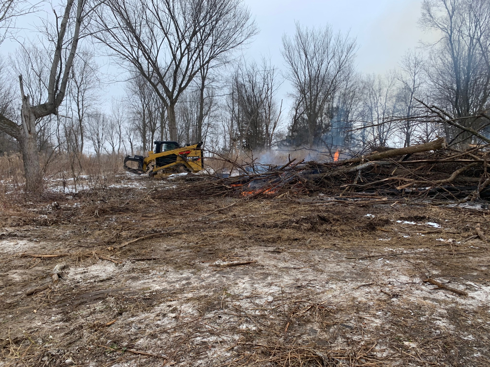

The Neal Smith Trail has no closures. Trail access parking lots may be closed due to COVID-19 restrictions. Lots currently closed: Cottonwood (past shelter 3) and Prairie Flower access.
A significant amount of tree clearing has been done in and around the Prairie Flower hiking trails. Rangers have removed fallen trees off of the trails at this time. Visitors may notice large piles of dead trees. These trees were cut down as part of an effort to restore native prairie and oak savanna in this area.
